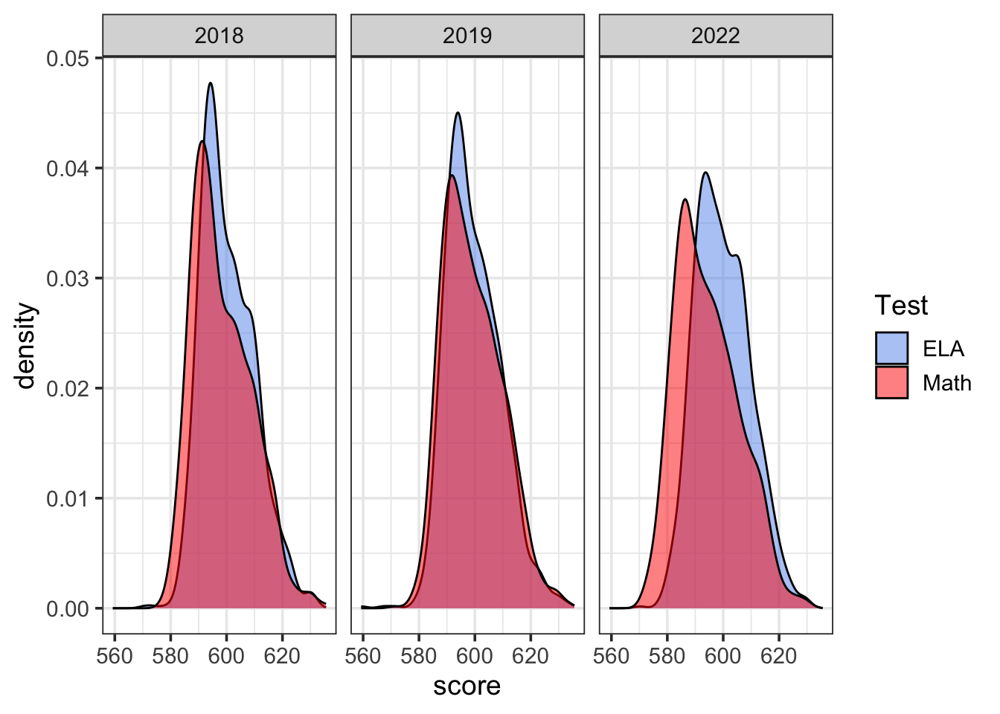
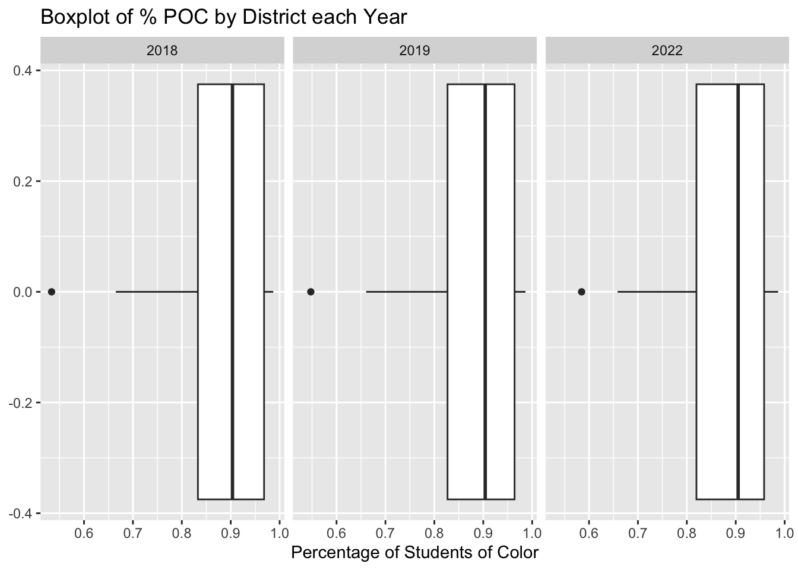

Chapter 4 Results
4.1 Analyzing standardized test scores
4.1.1 Descriptive Statistics
| 2018 | 2019 | 2022 | |
|---|---|---|---|
| min | 577.72 | 571.50 | 572.00 |
| max | 635.59 | 634.35 | 629.95 |
| mean | 598.46 | 599.27 | 594.48 |
| sd | 10.47 | 10.34 | 11.20 |
| var | 109.72 | 106.93 | 125.50 |
| kurtosis | 2.87 | 2.79 | 2.64 |
| skewness | 0.62 | 0.52 | 0.50 |
| Shapiro-Wilk p value | 0.00 | 0.00 | 0.00 |
| 2018 | 2019 | 2022 | |
|---|---|---|---|
| min | 570.58 | 559.30 | 570.30 |
| max | 631.72 | 634.06 | 630.56 |
| mean | 600.51 | 599.59 | 599.93 |
| sd | 9.43 | 9.59 | 9.68 |
| var | 88.99 | 91.94 | 93.77 |
| kurtosis | 3.04 | 3.38 | 2.73 |
| skewness | 0.57 | 0.49 | 0.36 |
| Shapiro-Wilk p value | 0.00 | 0.00 | 0.00 |
4.1.2 Reading vs. Math Scatterplot
In investigating the relationship between Reading and Math scores, we started very broad by asking ourselves if there is a correlation between success on Math & success on ELA. We chose to break this down at the school level, because there is a lot more data for us to work with.

The graphs above are three scatterplots of reading vs math test scores, separated based on the year the test was taken. The two main takeaways here are that there seems to be a strong positive correlation between reading and math scores in all three years, as one might expect. In other words, schools that performed well in math usually did well on reading too, and vice-versa. There were a few outliers each year, where some schools did noticeably better on math than on reading. There were also a few, less noticeable, schools who performed slightly better on ELA than on math.
4.1.3 Correlation Analysis
Let’s find the correlation between the Math and ELA scores to gain more insight on them analytically:
Since the Math and ELA scores are not normally distributed in any year we will use the Spearman’s correlation to examine the strength of the linear relationship between scores in each year. The data meets the assumptions for calculating Spearman’s correlation coefficient because test scores each year are on an interval scale, they represent paired observations, and they have a monotonic relationship (as shown above). This is what we get:
| 2018 | 2019 | 2022 | |
|---|---|---|---|
| Spearman correlation coefficient | 0.937 | 0.941 | 0.922 |
The second big takeaway from these scatterplots is that math scores were much lower in 2022 than in years prior. There is also more variance in scores in 2022, which is demonstrated by the relatively lower correlation coefficient and the higher variance of our scatterplot than in the other two years. We can likely attribute this to the onset of the Covid-19 global pandemic, which abruptly forced students to adapt to online learning for anywhere between six months to an entire school year.
Let’s look at the spread of the scores during these years:
Looking at this table we can confirm that the variance was higher for Math & ELA in 2022.
4.1.4 Density Histogram of Test Scores
Now that we’ve investigated the relationship between success on both exams, we want to know which exam students actually performed better on, over the years. Again, we are looking at this data on the school level because there is more data to work with.

Looking at our density histograms, we can see that there is a lot of overlap between scores in both subjects in this three year sample size. At first glance, it seems like student’s are performing slightly better on ELA than Math.
4.1.5 Confidence Intervals
In order to test the significance of the difference in test scores, we can utilize the t-test. Our null-hypothesis is that the two sample means are equal (or that the test scores are the same).
| Lower boundary | Upper boundary | Wilcox test p-value | |
|---|---|---|---|
| 2018 | -2.671 | -2.384 | 0 |
| 2019 | -2.671 | -2.384 | 0 |
| 2022 | -2.671 | -2.384 | 0 |
Looking at the result of our t-test, we cannot reject the null hypothesis that our two sample means are the same, even at the 1% level of significance! Therefore, there is no evidence of a significant difference between math & reading scores during the three year period that our data comes from.
Even when we repeat the test only looking at the year 2022 (where we noticed a bigger difference than years prior in our density histogram), there is still not enough evidence to reject the null hypothesis that the two sample means are the same, once again at the 1% level of significance.
4.2 Analyzing student demographics
For the second part of our analysis, we decided to explore the demographics of NYC schools, and how students’ identities impact their success on standardized testing. We started off by trying to learn more about how disability and funding interact in each school. The data includes an “Economic Need Index” (ENI) category that is the Department of Education’s internal metric for determining for creating a student’s individual funding needs. A student’s ENI is calculated using things like their housing status, English language learner status, eligibility for public assistance, and family income. You can learn more about how ENI’s are calculated at the student and school level here: (https://data.cccnewyork.org/data/map/1371/student-economic-need-index#1371/a/5/1622/127/a/a)
We created a heatmap of each schools’ percentage of students with a disability vs their ENI

There seems to be a slight positive association between ENI and %SWD each year, as noted by the trend from dark to lighter in the region around (0.5,0.15). Furthermore, the shape of the entire cluster itself loosely shows an increase in ENI as %SWD increases. This is interesting because disability status is not one of the explicit factors in calculating a student/school’s ENI. Students with disabilities deserve any necessary accommodations that will supplement their academic experience, yet the NYC DOE doesn’t explicitly factor this into an individual student’s need for funding. One might find it interesting to look at dropout rates of disabled students vs their ENI’s if they wish to learn more.
Next, we dove into the racial demographics of each district. We created a new “% POC” column in the data in order to plot race by district (which included the missing racial data group). We acknowledge the limitations of viewing race in the data as binary, which it is certainly not in real life. If one wishes to repeat this process, we would suggest potentially binning the data or creating a new “majority” categorical column that shows the leading racial demographic by percentage in a particular school/district.

From these boxplots, you can see that most NYC School Districts are primarily comprised of students of color. This is important to keep in mind when we investigate the relationship between race (as we have defined it here) and standardized testing success in our next plot. There is one outlier district each year, District 31, whose percentage of students of color is below 60 (but increasing each year). Looking back at our Cleveland Dot plots, District 31 performed in the top 11 in both Math & ELA every year, which is above average but not overwhelmingly great.
Now, we will look at all of the different student demographics of interest and determine the relationships between them all and test scores. In both of the following parallel coordinate plots, our factors of interest are score, total enrollment, % of students with disabilities, % of English language learners, % of students living in poverty, and % of students of color. We will do this using district data, because there is too much noise in the plot if we do it by district instead. The first plot is for ELA scores, and the second is for Math.

The biggest takeaways from this first graph is that there seems to be a negative association between the percentage of students who are English language learners and ELA test scores, there is a strong negative association between ELA test scores and the percentage of students of color, and that the percentage of students living in poverty has a slight negative correlation with the total enrollment. This first observation makes sense because taking a standardized test in a language that you are learning is an objectively difficult thing to do. The second observation is problematic when we consider our previous graph, showing that all districts are majority students of color; why is there a negative association between % of POC students and test scores in a majority POC school system?

We switched around the order of the factors for this second graph in order to see if we noticed anything new. Now, we can see a slight negative association between the percentage of students of color and total enrollment, and a strong negative association between both math scores and the percentage of students living in poverty and the percentage of English language learners and math scores.
4.2.1 Regression should be here!!
##
## Call:
## lm(formula = `Mean Scale Score_e` ~ ., data = lm_school)
##
## Residuals:
## Min 1Q Median 3Q Max
## -15.4742 -2.1197 -0.2134 1.9384 20.1074
##
## Coefficients:
## Estimate Std. Error t value Pr(>|t|)
## (Intercept) 232.447736 5.911495 39.321 < 2e-16 ***
## `Mean Scale Score_m` 0.632593 0.009272 68.223 < 2e-16 ***
## `% Asian` 0.050817 2.244759 0.023 0.982
## `% Poverty` -7.190721 0.610179 -11.785 < 2e-16 ***
## `% ELL` -13.077316 0.688691 -18.989 < 2e-16 ***
## `% SWD` -5.928832 1.027870 -5.768 8.75e-09 ***
## `% White` -2.282229 2.141533 -1.066 0.287
## `% Black` -3.067022 2.202037 -1.393 0.164
## `% Hispanic` -1.398547 2.187111 -0.639 0.523
## ---
## Signif. codes: 0 '***' 0.001 '**' 0.01 '*' 0.05 '.' 0.1 ' ' 1
##
## Residual standard error: 3.249 on 3319 degrees of freedom
## Multiple R-squared: 0.8851, Adjusted R-squared: 0.8848
## F-statistic: 3196 on 8 and 3319 DF, p-value: < 2.2e-16